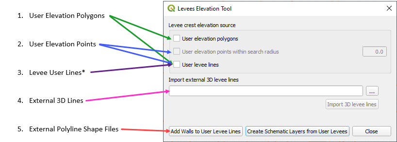

Levee Elevation Tool¶

The Levee Elevation Tool will create levees, berms, walls and dams. It uses data from 5 sources:
The method to create data from each source is outlined below.
Create Levee Lines¶
Start by creating a Levee Line any place where a levee should be positioned.
Select the Levee Lines layer in User Layers and toggle the Edit Pencil.
Click the Create Line Feature button and add a polyline to the center crest of the levee.
Right click anywhere after the last vertex to close the line.
Assign a levee crest elevation for a uniform levee.
If a correction is used, it will be added to the elevation field. It is not needed.
Failure data is not needed at this time.
Create a Levee Polygon¶
Digitize a polygon feature in the Elevation Polygons layer.
Select the Elevation Polygons layer and click the Toggle Editing pencil.
Create a polygon and assign the levee crest elevation.
The levee line feature must also be present for the levee position to be applied.
See Create Levee Lines.
Create Levee Points¶
Digitize points feature in the Elevation Points layer.
Select the Elevation Points layer and click the Toggle Editing pencil.
Create a series of points and assign the levee crest elevation. Turn on snapping so the points will snap to the levee line.
The levee line feature must also be present for the levee position to be applied. See the instructions above.
In this example, a correction was applied to a location where a spillway was designed.

Levee from Elevation Polygon¶
The polygon layer is also used to define a uniform elevation for a levee.
Click the Levee Elevation Tool icon.
Select User elevation polygons and click Create Schematic Layers from User Levees.
The Plugin will build the levee into a schematic layer, set the elevation data for the crest and apply a correction if used.
The data can be reviewed in the attribute table of the levee layer.
The Levee user lines will be used to set crest elevations where polygons are not covering the levee.


Levee from Elevation Points within Search Radius
Click the Levee Elevation Tool icon and select User elevation points within search radius and click OK.
The plugin will schematize the Levee Lines layer, set the elevation data for the crest and apply a correction if used.
The levee crest elevation is interpolated between the two points.
If the Levee user lines is also checked, that layer will be used to set crest elevations where points are not connected to the levee.

Levee from Levee User Lines¶
Click the Levee Elevation Tool icon and select User elevation points within search radius and click OK.
The plugin will schematize the Levee Lines layer, set the elevation data for the crest and apply a correction if used.
The levee crest elevation is interpolated between the two points.
Levee from Import External 3D Levee Lines¶
The levee data comes from an external point text file with a *.xyz extension:
Xcoord –x coordinate of the center of the levee crest
Ycoord – y coordinate of the center of the levee crest
Z – crest elevation of the levee
The levee points should be in order from one side of the levee to the other. The direction is not important. Two levees should be separated by a blank line (text file carriage return).

Call the levee data from the Levee Elevation Tool by clicking the “…” button under Import external 3D lines.

Once the data is identified, click the Import 3D levee lines button.
The imported levees are written to the elevation points and Levee Lines User Layer. Click Create Schematic Layers from User Layers to schematize the levee.